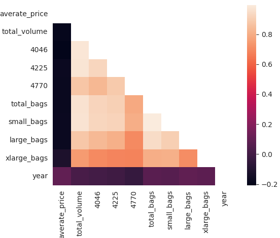

import pandas as pd
import seaborn as sns
import os
from data import load_dataset
import plotterAvocado Prices
The data docs provide some information on the source of the dataset and information regarding the attributes.
Preliminary Analysis
avocado = load_dataset("avocado")
avocado| Unnamed: 0 | Date | AveragePrice | Total Volume | 4046 | 4225 | 4770 | Total Bags | Small Bags | Large Bags | XLarge Bags | type | year | region | |
|---|---|---|---|---|---|---|---|---|---|---|---|---|---|---|
| 0 | 0 | 2015-12-27 | 1.33 | 64236.62 | 1036.74 | 54454.85 | 48.16 | 8696.87 | 8603.62 | 93.25 | 0.0 | conventional | 2015 | Albany |
| 1 | 1 | 2015-12-20 | 1.35 | 54876.98 | 674.28 | 44638.81 | 58.33 | 9505.56 | 9408.07 | 97.49 | 0.0 | conventional | 2015 | Albany |
| 2 | 2 | 2015-12-13 | 0.93 | 118220.22 | 794.70 | 109149.67 | 130.50 | 8145.35 | 8042.21 | 103.14 | 0.0 | conventional | 2015 | Albany |
| 3 | 3 | 2015-12-06 | 1.08 | 78992.15 | 1132.00 | 71976.41 | 72.58 | 5811.16 | 5677.40 | 133.76 | 0.0 | conventional | 2015 | Albany |
| 4 | 4 | 2015-11-29 | 1.28 | 51039.60 | 941.48 | 43838.39 | 75.78 | 6183.95 | 5986.26 | 197.69 | 0.0 | conventional | 2015 | Albany |
| ... | ... | ... | ... | ... | ... | ... | ... | ... | ... | ... | ... | ... | ... | ... |
| 18244 | 7 | 2018-02-04 | 1.63 | 17074.83 | 2046.96 | 1529.20 | 0.00 | 13498.67 | 13066.82 | 431.85 | 0.0 | organic | 2018 | WestTexNewMexico |
| 18245 | 8 | 2018-01-28 | 1.71 | 13888.04 | 1191.70 | 3431.50 | 0.00 | 9264.84 | 8940.04 | 324.80 | 0.0 | organic | 2018 | WestTexNewMexico |
| 18246 | 9 | 2018-01-21 | 1.87 | 13766.76 | 1191.92 | 2452.79 | 727.94 | 9394.11 | 9351.80 | 42.31 | 0.0 | organic | 2018 | WestTexNewMexico |
| 18247 | 10 | 2018-01-14 | 1.93 | 16205.22 | 1527.63 | 2981.04 | 727.01 | 10969.54 | 10919.54 | 50.00 | 0.0 | organic | 2018 | WestTexNewMexico |
| 18248 | 11 | 2018-01-07 | 1.62 | 17489.58 | 2894.77 | 2356.13 | 224.53 | 12014.15 | 11988.14 | 26.01 | 0.0 | organic | 2018 | WestTexNewMexico |
18249 rows × 14 columns
Let’s drop the column containing the unique ids (pandas does that for us) and rename the columns for simplicity.
avocado = avocado.drop("Unnamed: 0", axis="columns")
avocado = avocado.rename(mapper={"AveragePrice": "Averate Price"}, axis="columns")
avocado.columns = avocado.columns.str.lower().str.replace(" ", "_")
avocado.columnsIndex(['date', 'averate_price', 'total_volume', '4046', '4225', '4770',
'total_bags', 'small_bags', 'large_bags', 'xlarge_bags', 'type', 'year',
'region'],
dtype='object')avocado.shape(18249, 13)avocado.dtypesdate object
averate_price float64
total_volume float64
4046 float64
4225 float64
4770 float64
total_bags float64
small_bags float64
large_bags float64
xlarge_bags float64
type object
year int64
region object
dtype: objectdate should be converted to datetime dtype and type and region should be category dtype. total_column, 4046, 4225, 4770, total_bags, small_bags, and xlarge_bags are floats but represent an absolute value (number of bags and avocados sold), they should be rounded and converted to int type.
Handling datetime features
avocado["date"] = pd.to_datetime(avocado["date"].str.strip())
avocado["date"].dtypedtype('<M8[ns]')Handling categorical features
categorical_features = [
"type",
"region"
]
avocado[categorical_features] = avocado[categorical_features].apply(
lambda col: col.str.strip().astype("category")
)
avocado[categorical_features].dtypestype category
region category
dtype: objectHanding numerical features
numerical_features = [
"total_volume",
"4046",
"4225",
"4770",
"total_bags",
"small_bags",
"large_bags",
"xlarge_bags"
]
avocado[numerical_features] = avocado[numerical_features].apply(
lambda col: col.astype("int")
)
avocado[numerical_features].dtypestotal_volume int64
4046 int64
4225 int64
4770 int64
total_bags int64
small_bags int64
large_bags int64
xlarge_bags int64
dtype: objectDescriptive statistics, missing & duplicates
avocado.describe(include="all")| date | averate_price | total_volume | 4046 | 4225 | 4770 | total_bags | small_bags | large_bags | xlarge_bags | type | year | region | |
|---|---|---|---|---|---|---|---|---|---|---|---|---|---|
| count | 18249 | 18249.000000 | 1.824900e+04 | 1.824900e+04 | 1.824900e+04 | 1.824900e+04 | 1.824900e+04 | 1.824900e+04 | 1.824900e+04 | 18249.000000 | 18249 | 18249.000000 | 18249 |
| unique | NaN | NaN | NaN | NaN | NaN | NaN | NaN | NaN | NaN | NaN | 2 | NaN | 54 |
| top | NaN | NaN | NaN | NaN | NaN | NaN | NaN | NaN | NaN | NaN | conventional | NaN | Albany |
| freq | NaN | NaN | NaN | NaN | NaN | NaN | NaN | NaN | NaN | NaN | 9126 | NaN | 338 |
| mean | 2016-08-13 23:30:43.498273792 | 1.405978 | 8.506435e+05 | 2.930079e+05 | 2.951541e+05 | 2.283940e+04 | 2.396387e+05 | 1.821942e+05 | 5.433767e+04 | 3106.279029 | NaN | 2016.147899 | NaN |
| min | 2015-01-04 00:00:00 | 0.440000 | 8.400000e+01 | 0.000000e+00 | 0.000000e+00 | 0.000000e+00 | 0.000000e+00 | 0.000000e+00 | 0.000000e+00 | 0.000000 | NaN | 2015.000000 | NaN |
| 25% | 2015-10-25 00:00:00 | 1.100000 | 1.083800e+04 | 8.540000e+02 | 3.008000e+03 | 0.000000e+00 | 5.088000e+03 | 2.849000e+03 | 1.270000e+02 | 0.000000 | NaN | 2015.000000 | NaN |
| 50% | 2016-08-14 00:00:00 | 1.370000 | 1.073760e+05 | 8.645000e+03 | 2.906100e+04 | 1.840000e+02 | 3.974300e+04 | 2.636200e+04 | 2.647000e+03 | 0.000000 | NaN | 2016.000000 | NaN |
| 75% | 2017-06-04 00:00:00 | 1.660000 | 4.329620e+05 | 1.110200e+05 | 1.502060e+05 | 6.243000e+03 | 1.107830e+05 | 8.333700e+04 | 2.202900e+04 | 132.000000 | NaN | 2017.000000 | NaN |
| max | 2018-03-25 00:00:00 | 3.250000 | 6.250565e+07 | 2.274362e+07 | 2.047057e+07 | 2.546439e+06 | 1.937313e+07 | 1.338459e+07 | 5.719096e+06 | 551693.000000 | NaN | 2018.000000 | NaN |
| std | NaN | 0.402677 | 3.453545e+06 | 1.264989e+06 | 1.204120e+06 | 1.074640e+05 | 9.862424e+05 | 7.461785e+05 | 2.439659e+05 | 17692.837485 | NaN | 0.939938 | NaN |
avocado.isna().any()date False
averate_price False
total_volume False
4046 False
4225 False
4770 False
total_bags False
small_bags False
large_bags False
xlarge_bags False
type False
year False
region False
dtype: boolavocado[avocado.duplicated()].shape(0, 13)Correlations
plotter.corr(avocado.corr(numeric_only=True))
The numerical features are positively correlated to one another.